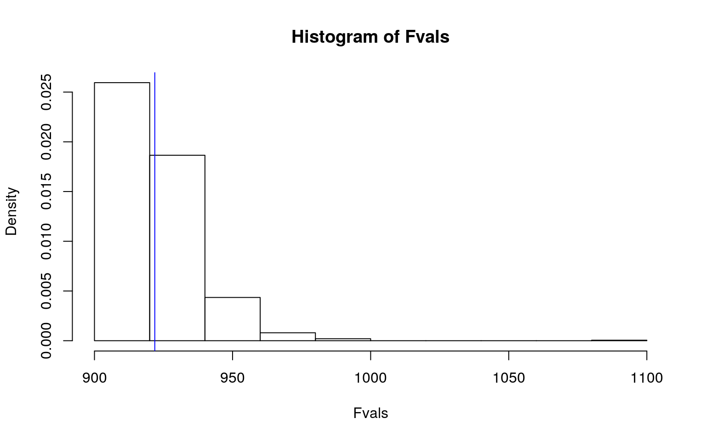

library(robustbase)
crohnD = CrohnDThis data set was from a study on 117 patients (therefore, 117 observations) affected by Crohn's disease, which is a chronic inflammatory disease that is localized in the intestines. It contains 9 variables: patient ID (unique number for each patient), number of adverse events, BMI (with units of kg/m^2), height (in centimeters), country (dichotomous variable, patient is either from country 1 or country 2), sex (male or female), age (in years), weight (in kilograms), and treatment (placebo, drug 1, or drug 2).
library(rstatix)
group <- crohnD$treat
DVs <- crohnD %>% select(nrAdvE,BMI,height,age,weight)
#Test multivariate normality for each group (null: assumption met)
sapply(split(DVs,group), mshapiro_test)## placebo d1 d2
## statistic 0.6757558 0.5258189 0.9414461
## p.value 5.223376e-08 4.754711e-10 0.04249535#p<.05, so I stopped (assumption violated).
man1 = manova(cbind(nrAdvE,BMI,height,age,weight)~treat,data=crohnD)
summary(man1)## Df Pillai approx F num Df den Df Pr(>F)
## treat 2 0.1351 1.6082 10 222 0.1054
## Residuals 1141-(0.95^1) # chance of type 1 error ## [1] 0.050.05/1 # calculation of bonferroni correction## [1] 0.05The numerical variables of number of adverse events, weight, height, and BMI were all tested to see if there was a mean difference across the three treatment groups. Multivariate normality was tested for each group, with all three groups reporting p values of less than 0.05, thus violating this assumption. The MANOVA test showed no significance, and so no univariate ANOVAs nor post-hoc t-tests were ran. The alpha value remained at 0.05. The chances of a type 1 error occuring is 5%. Regarding MANOVA assumptions, this is most like not a random sample, since this dataset consists patient data that was used in a research study. We can assume that the observations are independent as each observation represents an individual patient. This data does not meet the multivariate normality assumption, meaning that the further assumptions of homogeneity of within-group covariance matrices and lack of extreme univariate / covariate outliers were also not met. This data also most likely does not meet the MANOVA assumption of no multicolinearity, since the variables of weight/height/BMI are related to each other, and thus correlated.
library(vegan)
dist = DVs %>% dist()
adonis(dist~treat,data=crohnD)##
## Call:
## adonis(formula = dist ~ treat, data = crohnD)
##
## Permutation: free
## Number of permutations: 999
##
## Terms added sequentially (first to last)
##
## Df SumsOfSqs MeanSqs F.Model R2 Pr(>F)
## treat 2 1111 555.49 1.3105 0.02247 0.245
## Residuals 114 48323 423.89 0.97753
## Total 116 49434 1.00000#calculations for observed F
SSW = crohnD %>% group_by(treat) %>% select(nrAdvE, BMI, height, weight) %>% do(d=dist(.[2:3],"euclidean")) %>% ungroup() %>% summarize(sum(d[[1]]^2)/50 + sum(d[[2]]^2)/50 + sum(d[[3]]^2)/50)%>%pull
SST = sum(dist^2) / 117
obs_F = ((SST-SSW)/2)/(SSW/114)
Fvals = replicate(1000,{
new = crohnD %>% mutate(treat=sample(treat))
SSW = new %>% group_by(treat) %>% select(nrAdvE, BMI, height, weight) %>% do(d=dist(.[2:3],"euclidean")) %>% ungroup() %>% summarize(sum(d[[1]]^2)/50 + sum(d[[2]]^2)/50 + sum(d[[3]]^2)/50) %>% pull
((SST-SSW)/2)/(SSW/114) })
mean(Fvals > obs_F)## [1] 0.394{hist(Fvals, prob = T); abline(v = obs_F, col="blue", add = T)}
Null hypothesis: The center and spread of the three treatment groups were the same.
Alternate hypothesis: At least one of the treatment groups' center and/or spread was different from the other groups.
Since the p-value is greater than 0.05, we fail to reject the null hypothesis, meaning that the three treatment groups do not have significantly different centers nor spreads.
crohnD$nrAdvEc = crohnD$nrAdvE - mean(crohnD$nrAdvE)
crohnD$heightc = crohnD$height - mean(crohnD$height)
crohnD$weightc = crohnD$weight - mean(crohnD$weight)
crohnD$BMIc = crohnD$BMI - mean(crohnD$BMI)
crohnD = crohnD %>% mutate(treat = as.factor(treat))
fit = lm(nrAdvE ~ treat*weightc, data = crohnD)
summary(fit)##
## Call:
## lm(formula = nrAdvE ~ treat * weightc, data = crohnD)
##
## Residuals:
## Min 1Q Median 3Q Max
## -3.4728 -1.7517 -1.1827 0.7796 9.9646
##
## Coefficients:
## Estimate Std. Error t value Pr(>|t|)
## (Intercept) 2.43378 0.44048 5.525 2.2e-07 ***
## treatd1 -0.82383 0.62636 -1.315 0.191
## treatd2 -0.23671 0.62753 -0.377 0.707
## weightc 0.03058 0.03844 0.796 0.428
## treatd1:weightc -0.01026 0.04991 -0.206 0.837
## treatd2:weightc -0.05334 0.04691 -1.137 0.258
## ---
## Signif. codes: 0 '***' 0.001 '**' 0.01 '*' 0.05 '.' 0.1
' ' 1
##
## Residual standard error: 2.745 on 111 degrees of freedom
## Multiple R-squared: 0.03208, Adjusted R-squared:
-0.01152
## F-statistic: 0.7359 on 5 and 111 DF, p-value: 0.5981coef(fit)## (Intercept) treatd1 treatd2 weightc treatd1:weightc
treatd2:weightc
## 2.43378218 -0.82382958 -0.23671099 0.03058350
-0.01026360 -0.05334432The predicted number of adverse events for someone with an average weight in the placebo treatment group is 2.434 events. Individuals with an average weight in the d1 treatment group had 0.824 fewer adverse events than those in the placebo treatment group. Individuals with an average weight in the d2 treatment group had 0.237 fewer adverse events than those in the placebo treatment group. As weight increases by 1 for individuals in the placebo treatment group, the predicted number of adverse events goes up by 0.031. The slope for weight on the number of adverse events for the d1 treatment group is 0.0103 lower than that for the placebo treatment group. The slope for weight on the number of adverse events for the d2 treatment group is 0.0533 lower than that for the placebo treatment group.
crohnD %>% ggplot(aes(weightc, nrAdvE, color=treat)) +
geom_point() +
geom_smooth(method = 'lm', se = F, fullrange = T) +
ggtitle("Linear Regression Prediction of Number of Adverse Events with Weight and Treatment") +
ylab("Number of Adverse Events") +
xlab("Weight") +
labs(color = "Treatment")#normality check
residual = lm(nrAdvE ~ treat*weightc, data=crohnD)$residuals
shapiro.test(residual) # p < 0.05, fails normality assumption##
## Shapiro-Wilk normality test
##
## data: residual
## W = 0.82849, p-value = 2.409e-10#homoskedasticity check
bptest(fit) # fail to reject (p > 0.05), it is homoskedastic##
## studentized Breusch-Pagan test
##
## data: fit
## BP = 2.7366, df = 5, p-value = 0.7405#linearity check
crohnD %>% filter(treat == "placebo") %>% ggplot(aes(weightc, nrAdvE)) +
geom_point()crohnD %>% filter(treat == "d1") %>% ggplot(aes(weightc, nrAdvE)) +
geom_point()crohnD %>% filter(treat == "d2") %>% ggplot(aes(weightc, nrAdvE)) +
geom_point()#linearity is not clear from the graphs above
#robust SE test
coeftest(fit, vcov=vcovHC(fit))##
## t test of coefficients:
##
## Estimate Std. Error t value Pr(>|t|)
## (Intercept) 2.433782 0.535046 4.5487 1.386e-05 ***
## treatd1 -0.823830 0.663804 -1.2411 0.2172
## treatd2 -0.236711 0.705945 -0.3353 0.7380
## weightc 0.030584 0.053250 0.5743 0.5669
## treatd1:weightc -0.010264 0.058102 -0.1766 0.8601
## treatd2:weightc -0.053344 0.061491 -0.8675 0.3875
## ---
## Signif. codes: 0 '***' 0.001 '**' 0.01 '*' 0.05 '.' 0.1
' ' 1The robust standard errors test showed that no variable demonstrated any significance, which is in line with the initial linear regression test. According to the R^2 value calculated in the initial linear regression, our model explains 3.21% of variability in number of adverse events.
boot_data = sample_frac(crohnD, replace = T)
samp_distn = replicate(5000, {
boot_data = sample_frac(crohnD, replace=T)
fit = lm(nrAdvE~weightc*treat, data=boot_data)
coef(fit)
})
summary(fit)##
## Call:
## lm(formula = nrAdvE ~ treat * weightc, data = crohnD)
##
## Residuals:
## Min 1Q Median 3Q Max
## -3.4728 -1.7517 -1.1827 0.7796 9.9646
##
## Coefficients:
## Estimate Std. Error t value Pr(>|t|)
## (Intercept) 2.43378 0.44048 5.525 2.2e-07 ***
## treatd1 -0.82383 0.62636 -1.315 0.191
## treatd2 -0.23671 0.62753 -0.377 0.707
## weightc 0.03058 0.03844 0.796 0.428
## treatd1:weightc -0.01026 0.04991 -0.206 0.837
## treatd2:weightc -0.05334 0.04691 -1.137 0.258
## ---
## Signif. codes: 0 '***' 0.001 '**' 0.01 '*' 0.05 '.' 0.1
' ' 1
##
## Residual standard error: 2.745 on 111 degrees of freedom
## Multiple R-squared: 0.03208, Adjusted R-squared:
-0.01152
## F-statistic: 0.7359 on 5 and 111 DF, p-value: 0.5981samp_distn %>% t %>% as.data.frame %>% summarize_all(sd)## (Intercept) weightc treatd1 treatd2 weightc:treatd1
weightc:treatd2
## 1 0.5035319 0.04915491 0.6356345 0.6680544 0.05413886
0.05591217The bootstrapped standard errors calculated above are incredibly similar to the original and robust standard errors calculated earlier. The p values remain to be the same, and thus the bootstrapped standard errors do not make any of the variables significant. # 5. (25 pts)
crohnD = crohnD %>% mutate(treatb = ifelse(treat=="placebo",0,1))
fit1 = glm(treatb~weightc+nrAdvE, data = crohnD, family = binomial(link = "logit"))
coeftest(fit1)##
## z test of coefficients:
##
## Estimate Std. Error z value Pr(>|z|)
## (Intercept) 0.8517976 0.2497933 3.4100 0.0006496 ***
## weightc 0.0062448 0.0141227 0.4422 0.6583597
## nrAdvE -0.0744920 0.0702416 -1.0605 0.2889126
## ---
## Signif. codes: 0 '***' 0.001 '**' 0.01 '*' 0.05 '.' 0.1
' ' 1exp(coef(fit1))## (Intercept) weightc nrAdvE
## 2.3438563 1.0062643 0.9282149predicted = predict(fit1, type = "response")
pred = ifelse(predicted > .5,1,0)
table(prediction=pred, truth = crohnD$treatb) %>% addmargins## truth
## prediction 0 1 Sum
## 0 2 0 2
## 1 37 78 115
## Sum 39 78 117#accuracy
(2+78)/117## [1] 0.6837607#TPR
78/78## [1] 1#TNR
2/39## [1] 0.05128205#PPV
78/115## [1] 0.6782609For every unit increase in weight, the odds of a patient receiving a drug that isn't a placebo increases by 1.006. For every unit increase in the number of adverse events, the odds of a patient receiving a drug that isn't a placebo increases by 0.928.The model has an accuracy of 68.38%; that is, the model correctly classified 68.38% of cases. Additionally, the model has a TPR of 100%, meaning that 100% of patients actually receiving the drug were correctly classified. The TNR of the model was 5.13%, meaning that 5.13% of patients in the placebo group were correctly classified. This model also has a PPV of 67.83%, meaning that 67.83% of patients classified as being from a drug group were actually from a drug group.
crohnD$logit = predict(fit1, data = crohnD, type = "link")
crohnD$treatb = factor(crohnD$treatb, levels = c("1","0"))
crohnD = crohnD %>% mutate(treatment = ifelse(treat=="placebo", "placebo","drug"))
crohnD %>% ggplot(aes(logit, fill = treatment)) +
geom_density(alpha = .3) +
geom_vline(xintercept = 0, lty = 2) +
ggtitle("Log-odds Density by Treatment Group")library(plotROC)
crohnD = crohnD %>% mutate(treatb=ifelse(treat=='placebo',0,1))
crohnD$prob = predict(fit1, type = "response")
ROCplot = ggplot(crohnD) + geom_roc(aes(d = treatb, m = prob), n.cuts = 0)
ROCplotcalc_auc(ROCplot)## PANEL group AUC
## 1 1 -1 0.5691979The ROC plot above shows an AUC value of 0.569, meaning that this a poor model at predicting a patient's treatment group.
class_diag <- function(probs,truth){
#CONFUSION MATRIX: CALCULATE ACCURACY, TPR, TNR, PPV
tab<-table(factor(probs>.5,levels=c("FALSE","TRUE")),truth)
acc=sum(diag(tab))/sum(tab)
sens=tab[2,2]/colSums(tab)[2]
spec=tab[1,1]/colSums(tab)[1]
ppv=tab[2,2]/rowSums(tab)[2]
f1=2*(sens*ppv)/(sens+ppv)
if(is.numeric(truth)==FALSE & is.logical(truth)==FALSE) truth<-as.numeric(truth)-1
#CALCULATE EXACT AUC
ord<-order(probs, decreasing=TRUE)
probs <- probs[ord]; truth <- truth[ord]
TPR=cumsum(truth)/max(1,sum(truth))
FPR=cumsum(!truth)/max(1,sum(!truth))
dup<-c(probs[-1]>=probs[-length(probs)], FALSE)
TPR<-c(0,TPR[!dup],1); FPR<-c(0,FPR[!dup],1)
n <- length(TPR)
auc<- sum( ((TPR[-1]+TPR[-n])/2) * (FPR[-1]-FPR[-n]) )
data.frame(acc,sens,spec,ppv,f1,auc)
}
fit = glm(treatb~heightc+BMIc, data = crohnD, family = "binomial")
prob = predict(fit, type = "response")
class_diag(prob,crohnD$treatb)## acc sens spec ppv f1 auc
## 1 0.6666667 1 0 0.6666667 0.8 0.5560487In-sample diagnostics of the linear regression model predicting treatment group with heigh and BMI were ran. Accuracy was 66.67%, meaning that the model correctly classified 66.67% of cases. The sensitivity was 1, meaning that 100% of actual drug group patients were correctly classified as being of the drug group. The specificity was 0, meaning that none of the patients from the placebo group were correctly classified. The PPV is 66.67%, meaning that 66.67% of those classified as part of the drug group actually are a part of the drug group.
#10 fold CV
crohnD <- crohnD %>% mutate(y=ifelse(treatb=="0",0,1))
set.seed(1234)
k=10
data<-crohnD[sample(nrow(crohnD)),]
folds<-cut(seq(1:nrow(crohnD)),breaks=k,labels=F)
diags<-NULL
for(i in 1:k){
train<-data[folds!=i,]
test<-data[folds==i,]
truth<-test$y
fit<-glm(y~heightc+BMIc,data=train,family="binomial")
probs<-predict(fit,newdata = test,type="response")
diags<-rbind(diags,class_diag(probs,truth))
}
summarize_all(diags,mean) ## acc sens spec ppv f1 auc
## 1 0.6651515 1 0 0.6651515 0.7943913 0.4630093The 10 fold cross validation model demonstrated 66.52% accuracy, 100% sensitivity, 0% specificity, and 66.52% PPV. The AUC value is 0.463, thus indicating that this is a very poor model for predicting treatment group.
#LASSO regression
library(glmnet)
crohnD2 = crohnD %>% select(2:9,treatb,-treat)
y = as.matrix(crohnD2$treatb)
x = model.matrix(treatb~1+.,data=crohnD2)
head(x)## (Intercept) nrAdvE BMI height countryc2 sexF age weight
## 1 1 4 25.22 163 0 1 47 67
## 2 1 4 23.80 164 0 1 53 64
## 3 1 1 23.05 164 0 1 68 62
## 4 1 1 25.71 165 0 1 48 70
## 5 1 2 25.95 170 0 1 67 75
## 6 1 2 28.70 168 0 1 54 81cv = cv.glmnet(x,y, family = "binomial")
lasso = glmnet(x,y, family = "binomial", lambda = cv$lambda.1se)
coef(lasso)## 9 x 1 sparse Matrix of class "dgCMatrix"
## s0
## (Intercept) 0.6931472
## (Intercept) 0.0000000
## nrAdvE .
## BMI .
## height .
## countryc2 .
## sexF .
## age .
## weight .From the LASSO regression test, it seems that none of the variables were retained. As a result, we will be arbitrarily choosing number of adverse events for the next model.
set.seed(1234)
k=10
data<-crohnD[sample(nrow(crohnD)),]
folds<-cut(seq(1:nrow(crohnD)),breaks=k,labels=F)
diags<-NULL
for(i in 1:k){
train<-data[folds!=i,]
test<-data[folds==i,]
truth<-test$treatb
fit<-glm(treatb~nrAdvE,data=train,family="binomial")
probs<-predict(fit,newdata = test,type="response")
diags<-rbind(diags,class_diag(probs,truth))
}
summarize_all(diags,mean) ## acc sens spec ppv f1 auc
## 1 0.6568182 0.975 0.03333333 0.665303 0.7853437 0.5339815The AUC for the out-of-sample model is 0.534, which is better than the originial in-sample model's AUC value of 0.463. Since this model has a larger AUC value more than just a few hundredths, I assume that the original model was overfitted.